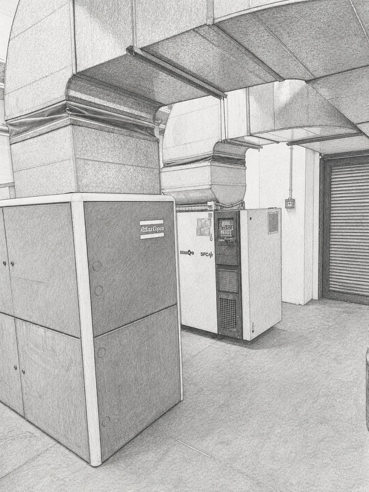

01 · Энергетическое сердце
Энергетическое сердце завода
За каждой производственной линией стоят системы, которые остаются за кулисами — но без них ничего не работает.

Ищем техников, инженеров-практиков и людей с подтверждённым опытом работы с воздушными компрессорами, чиллерами и бойлерами.
Это работа в сердце систем, которые держат реальное производство: воздух, тепло, охлаждение, вода и пар — с ответственностью, которую видно на месте.
За каждой производственной линией стоят системы, которые остаются за кулисами — но без них ничего не работает.

Воздушные компрессоры, чиллеры, бойлеры и энергетическая инфраструктура — настоящая техническая работа в настоящей промышленной среде.
Кто подходит, зачем писать и что делать дальше.
Люди, которые уже знают промышленные системы, энергию или обслуживание.
Молодые специалисты, которые хотят учиться настоящей профессии на месте.
Если есть реальный опыт с воздушными компрессорами, чиллерами или бойлерами — давайте поговорим.
Напишите нам — мы вернёмся с деталями по вакансии, сменам и соответствию команде энергии.